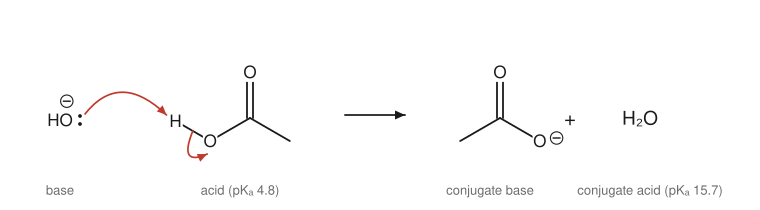
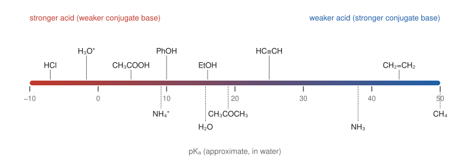
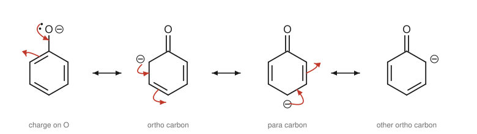

Chapter 4: Acids and Bases in Organic Chemistry¶
Proton transfer, pKa and the structure of the conjugate base
Acid–base reactions are the simplest reactions in organic chemistry and among the most important. Many reactions start with a proton transfer, many end with one, and the same ideas that decide how strong an acid is (where a negative charge can sit comfortably, how far it can spread) decide the course of reactions throughout the book. This chapter sets out the Brønsted–Lowry and Lewis definitions, the pKa scale, how to predict the direction of an acid–base reaction, and the structural factors that make one acid stronger than another.
Learning outcomes
By the end of this chapter you should be able to:
- identify acids, bases and conjugate pairs, and show proton transfer with curly arrows;
- use pKa values to compare acid strength and to predict the position of an acid–base equilibrium;
- explain differences in acidity using the atom bearing the charge, resonance, inductive effects and hybridisation;
- compare the strength of bases using the pKa of their conjugate acids;
- predict which form of an acid or base predominates at a given pH;
- recognise Lewis acids and bases and connect them to electrophiles and nucleophiles.
4.1 Brønsted–Lowry acids and bases¶
In the Brønsted–Lowry definition, an acid is a proton donor and a base is a proton acceptor. (A "proton" here means a hydrogen ion, H⁺, a hydrogen atom without its electron.) When an acid HA gives its proton to a base B, the acid becomes its conjugate base A⁻ and the base becomes its conjugate acid BH⁺:
Every acid–base reaction involves two conjugate acid–base pairs: HA/A⁻ and BH⁺/B. The members of a pair differ by one proton.
A base needs a pair of electrons with which to take the proton, usually a lone pair on oxygen or nitrogen, or a negative charge. This is why curly arrows describe acid–base reactions so well. One arrow starts at the lone pair of the base and points to the proton; a second arrow starts at the H–A bond and points to A, showing the bonding pair staying behind on A as the new lone pair.

Caution: arrows show electrons, not protons
A curly arrow always shows the movement of an electron pair. It never shows a proton (or any atom) moving. In a proton transfer, draw the arrow from the lone pair of the base to the H, not from the H to the base.
Water can act as either an acid or a base (it is amphoteric): it donates a proton to ammonia, giving hydroxide, and accepts one from hydrogen chloride, giving the hydronium ion, H₃O⁺. Many organic molecules are amphoteric too. Ethanol is a weak acid towards a strong base and a weak base towards a strong acid.
4.2 Measuring acid strength: Ka and pKa¶
The strength of an acid in water is measured by the equilibrium constant for its ionisation, the acid dissociation constant \(K_\mathrm{a}\):
Ka values range over more than fifty powers of ten, so they are converted into a logarithmic scale, just as hydrogen-ion concentrations are converted into pH:
The smaller the pKa, the stronger the acid. Because the scale is logarithmic, a difference of one pKa unit means a tenfold difference in Ka: ethanoic acid (pKa 4.8) is about one hundred thousand times more acidic than phenol (pKa 10).

| Acid | Conjugate base | Approximate pKa |
|---|---|---|
| HCl | Cl⁻ | −7 |
| H₃O⁺ | H₂O | −1.7 |
| CH₃COOH (ethanoic acid) | CH₃COO⁻ | 4.8 |
| NH₄⁺ | NH₃ | 9.2 |
| C₆H₅OH (phenol) | C₆H₅O⁻ | 10 |
| CH₃NH₃⁺ | CH₃NH₂ | 10.6 |
| H₂O | OH⁻ | 15.7 |
| CH₃CH₂OH (ethanol) | CH₃CH₂O⁻ | 16 |
| CH₃COCH₃ (C–H next to C=O) | ⁻CH₂COCH₃ | 19 |
| HC≡CH | HC≡C⁻ | 25 |
| NH₃ | NH₂⁻ | 38 |
| CH₂=CH₂ | CH₂=CH⁻ | 44 |
| CH₄ | CH₃⁻ | 50 |
Table 4.1. Approximate pKa values worth remembering. Values above about 16 cannot be measured in water and are estimated by other methods; treat them as a guide to order of magnitude.
Note: the pKa of water
Some books give the pKa of water as 15.7 and others as 14.0. The difference comes from how the concentration of water itself is treated in the equilibrium expression. This book uses 15.7, which makes water directly comparable with alcohols, but the conclusions never depend on the choice.
4.3 Predicting the direction of an acid–base reaction¶
An acid–base equilibrium always lies on the side of the weaker acid and the weaker base. Put simply, the proton ends up on the strongest base available.
To predict the outcome of a reaction:
- Identify the acid on each side of the equation.
- Look up (or estimate) their pKa values.
- The equilibrium favours the side with the acid of higher pKa (the weaker acid).
The equilibrium constant for the reaction is approximately \(10^{\Delta}\), where \(\Delta\) is the pKa of the product acid minus the pKa of the reactant acid.
Example 4.1: Will hydroxide deprotonate ethanoic acid? Will it deprotonate ethyne?
Ethanoic acid + hydroxide → ethanoate + water. The acid on the left has pKa 4.8; the acid on the right (water) has pKa 15.7. The weaker acid is water, on the right, so the reaction goes essentially to completion. K ≈ 10^(15.7 − 4.8) ≈ 10¹¹. This is why carboxylic acids dissolve in aqueous sodium hydroxide.
Ethyne + hydroxide → ethynide + water. The acid on the left (ethyne) has pKa 25; the acid on the right (water) has pKa 15.7. Now the weaker acid is on the left, so the equilibrium lies far to the left: hydroxide is not a strong enough base. To remove the proton from ethyne we need the conjugate base of a much weaker acid, such as the amide ion NH₂⁻ (the conjugate base of ammonia, pKa 38).
Key idea
A base can effectively remove a proton from any acid whose pKa is lower than the pKa of the base's own conjugate acid. Read Table 4.1 this way: each conjugate base in the table can deprotonate every acid above it.
4.4 What makes an acid strong?¶
An acid is strong when its conjugate base is stable. Everything that stabilises the negative charge left behind in A⁻ makes HA more acidic. Four structural factors matter, roughly in this order of importance.
1. The atom that carries the charge¶
Across a row of the periodic table, acidity increases with electronegativity. A more electronegative atom holds a negative charge better:
Down a group, acidity increases with the size of the atom, even though electronegativity decreases. HF (pKa 3.2) is far weaker than HCl (−7), HBr (−9) and HI (−10). In a larger atom the charge is spread over a larger volume, and the H–X bond is longer and weaker. Similarly, thiols (R–SH, pKa about 10) are more acidic than alcohols (R–OH, pKa about 16).
2. Resonance¶
If the negative charge of the conjugate base can be delocalised by resonance, it is stabilised, and the acid is stronger. Compare ethanol (pKa 16) with ethanoic acid (pKa 4.8). Both lose a proton from an O–H group. In ethoxide, CH₃CH₂O⁻, the charge stays on one oxygen. In ethanoate, the charge is shared equally between two oxygens through two equivalent resonance contributors (Figure 1.4). That sharing makes ethanoic acid about 10¹¹ times more acidic.
Phenol (pKa 10) lies between the two. When phenol loses its proton, the negative charge can spread from oxygen into the benzene ring, onto the two ortho carbons and the para carbon.

The phenoxide charge is spread over four atoms, but three of them are carbon, which holds negative charge less well than oxygen. In ethanoate both atoms sharing the charge are oxygen. That is why phenol is a weaker acid than a carboxylic acid.
A group that can accept electrons by resonance strengthens the acid further. 4-Nitrophenol (pKa about 7.2) is a much stronger acid than phenol, because the nitro group at the para position can take the negative charge onto its own oxygens.
3. Inductive effects¶
Electronegative atoms pull electron density through σ bonds. This inductive effect spreads the negative charge of a nearby anion and stabilises it. Each chlorine added to ethanoic acid makes the acid stronger:
| Acid | pKa |
|---|---|
| CH₃COOH | 4.76 |
| ClCH₂COOH | 2.86 |
| Cl₂CHCOOH | 1.29 |
| Cl₃CCOOH | 0.65 |
Table 4.2. The inductive effect of chlorine on the acidity of ethanoic acid.
The inductive effect falls off quickly with distance, because it is passed along σ bonds. Butanoic acid has pKa 4.82. A chlorine on the carbon next to the COOH group (2-chlorobutanoic acid) lowers it to 2.86, one carbon further away (3-chlorobutanoic acid) to 4.05, and on the far end (4-chlorobutanoic acid) only to 4.52.
Alkyl groups have a weak opposite effect: they are slightly electron-donating, which destabilises an anion. This is one reason why ethanoic acid (4.76) is weaker than methanoic acid (3.75).
4. Hybridisation¶
The more s character in the orbital holding the lone pair of the conjugate base, the more stable the anion. An s orbital is closer to the nucleus than a p orbital, so electrons in it are held more tightly. sp orbitals have 50% s character, sp² 33% and sp³ 25%. Hence:
Terminal alkynes are acidic enough to be deprotonated by the amide ion, a fact used to make new carbon–carbon bonds in Chapter 7.
Key idea: ARIO
To compare two acids, look at their conjugate bases and ask, in order: which Atom carries the charge? Is there Resonance? Are there Inductive effects? In what Orbital (hybridisation) is the lone pair? The first factor that differs usually decides.
Example 4.2: Ranking acids
Rank in order of increasing acidity: ethanol, ethanoic acid, phenol, 2,2,2-trifluoroethanol (CF₃CH₂OH).
All four lose a proton from O–H, so the atom is the same. Ethanoic acid has the best resonance (two oxygens) and is the most acidic. Phenol has resonance into the ring and comes next. Ethanol and trifluoroethanol have no resonance; the three fluorines of trifluoroethanol stabilise the anion inductively, so it is more acidic than ethanol (its pKa is about 12.4).
Increasing acidity: ethanol < trifluoroethanol < phenol < ethanoic acid.
4.5 Bases and the pKa of the conjugate acid¶
The strength of a base is described by the pKa of its conjugate acid, sometimes written pKaH. The higher the pKa of the conjugate acid, the stronger the base, because a strong base holds onto the proton it gains.
| Base | Conjugate acid | pKa of conjugate acid | Comment |
|---|---|---|---|
| CH₃NH₂ (methanamine) | CH₃NH₃⁺ | 10.6 | alkyl group donates electrons |
| NH₃ | NH₄⁺ | 9.2 | reference |
| C₅H₅N (pyridine) | C₅H₅NH⁺ | 5.2 | lone pair in an sp² orbital |
| C₆H₅NH₂ (aniline) | C₆H₅NH₃⁺ | 4.6 | lone pair delocalised into the ring |
| CH₃CONH₂ (ethanamide) | CH₃C(OH)=NH₂⁺ | about −0.5 | lone pair delocalised onto C=O |
Table 4.3. Nitrogen bases. The same factors that stabilise anions also explain base strength: a lone pair that is delocalised or held in an orbital with more s character is less available for a proton.
Amines are the most important organic bases (Chapter 13). Amides contain nitrogen too, but they are hardly basic at all, because the nitrogen lone pair is delocalised onto the carbonyl oxygen by resonance. Strong bases used in the laboratory include sodium hydroxide, alkoxides such as sodium ethoxide, sodium amide (NaNH₂) and sodium hydride (NaH), whose hydride ion H⁻ is the conjugate base of H₂ (pKa about 35).
Caution: strong base, not 'strong acid's conjugate'
The conjugate base of a strong acid is a weak base: Cl⁻ from HCl has no useful basicity at all. The conjugate base of a weak acid is a strong base: NH₂⁻ from NH₃ is very strong. Keep the see-saw in mind.
4.6 Acids and bases at a given pH¶
In biology and in the laboratory we often need to know which form of a compound is present at a particular pH. The Henderson–Hasselbalch equation relates the ratio of the two forms to the pH:
Three useful consequences follow:
- When pH = pKa, the acid is exactly half ionised.
- When the pH is below the pKa, the protonated form (HA) predominates; when it is above, the deprotonated form (A⁻) predominates.
- Each unit of pH away from the pKa changes the ratio by a factor of ten.
Example 4.3: An amino acid at pH 7
In the body (pH about 7.4), a carboxylic acid group (pKa about 2 in an amino acid) is far above its pKa: it is almost entirely in the form COO⁻. An amino group whose conjugate acid has pKa about 9.5 is below its pKa: it is almost entirely in the form NH₃⁺. So an amino acid such as glycine exists in water near neutral pH as a zwitterion, ⁺H₃N–CH₂–COO⁻, carrying both a positive and a negative charge (Chapter 15).
The same reasoning underlies a standard separation in the laboratory, acid–base extraction. A carboxylic acid dissolved in an organic solvent with a neutral compound can be removed by shaking the solution with aqueous sodium hydrogencarbonate: the acid is converted into its water-soluble carboxylate salt and moves into the aqueous layer, while the neutral compound stays behind. Acidifying the aqueous layer then gives back the free acid.
4.7 Lewis acids and bases¶
The Lewis definition is broader. A Lewis base is an electron-pair donor, and a Lewis acid is an electron-pair acceptor. Every Brønsted base is also a Lewis base, and H⁺ is one particular Lewis acid. But many Lewis acids contain no proton at all. They are species with an empty orbital or a low-lying vacant orbital:
- Boron trifluoride, BF₃: boron has only six valence electrons and an empty p orbital. It accepts a lone pair from an ether or an amine to form an adduct, such as F₃B⁻–O⁺(CH₂CH₃)₂.
- Aluminium chloride, AlCl₃, and iron(III) bromide, FeBr₃: used as catalysts in the substitution reactions of benzene (Chapter 8).
- Metal cations such as Mg²⁺ and Zn²⁺, which bind lone pairs.
- Carbocations, such as (CH₃)₃C⁺, which have an empty p orbital on carbon.
The Lewis picture leads directly to the most important idea in the study of reactions. A Lewis base attacking a carbon atom is called a nucleophile, and a Lewis acid, or any species with an electron-poor atom that can accept a pair, is called an electrophile. Chapter 5 develops this language and uses it to describe reaction mechanisms.
4.8 Summary¶
Summary
- Brønsted–Lowry: acids donate protons, bases accept them. Each acid has a conjugate base and each base a conjugate acid.
- Curly arrows run from the lone pair of the base to the proton, and from the H–A bond to A.
- \(\mathrm{p}K_\mathrm{a} = -\log K_\mathrm{a}\). Lower pKa means a stronger acid; each unit is a factor of ten.
- An acid–base equilibrium favours the weaker acid and weaker base.
- Acidity rises with the electronegativity and size of the atom carrying the charge, with resonance delocalisation of the charge, with electron-withdrawing groups nearby, and with s character of the lone-pair orbital.
- Base strength is measured by the pKa of the conjugate acid: higher means stronger.
- Below its pKa an acid is mainly protonated; above it, mainly ionised.
- Lewis acids accept electron pairs and Lewis bases donate them; nucleophiles and electrophiles are the reacting partners of Chapter 5.
4.9 Exercises¶
Exercise 1
Identify the acid, base, conjugate acid and conjugate base in: CH₃NH₂ + CH₃COOH ⇌ CH₃NH₃⁺ + CH₃COO⁻. Draw the curly arrows. Which side does the equilibrium favour?
Answer
CH₃COOH is the acid and CH₃NH₂ the base; CH₃NH₃⁺ is the conjugate acid of methanamine and CH₃COO⁻ the conjugate base of ethanoic acid. Arrows: from the nitrogen lone pair to the acidic H of the COOH group, and from the O–H bond onto the oxygen. The acids are CH₃COOH (pKa 4.8) and CH₃NH₃⁺ (10.6). The weaker acid is CH₃NH₃⁺, on the right, so the equilibrium lies to the right (K ≈ 10^5.8).
Exercise 2
Which of the following bases can deprotonate ethanol (pKa 16) essentially completely? (a) NaOH; (b) NaNH₂; (c) NaH; (d) NaHCO₃ (the conjugate acid, H₂CO₃, has pKa 6.4).
Answer
A base deprotonates ethanol completely only if its conjugate acid is much weaker than ethanol (pKa well above 16). (a) No: water (15.7) and ethanol (16) are nearly equal, so an equilibrium mixture results. (b) Yes: ammonia has pKa 38. (c) Yes: H₂ has pKa about 35, and the H₂ escapes as a gas, which drives the reaction to completion. (d) No: H₂CO₃ (6.4) is a far stronger acid than ethanol.
Exercise 3
Explain why ethanoic acid (pKa 4.8) is a much stronger acid than ethanol (pKa 16), even though both lose a proton from an O–H group.
Answer
Compare the conjugate bases. In ethanoate the negative charge is delocalised by resonance over two equivalent oxygen atoms; in ethoxide it is localised on one oxygen. Delocalisation stabilises ethanoate, so ethanoic acid gives up its proton more readily. In addition, the C=O group withdraws electrons inductively from the O–H oxygen.
Exercise 4
Rank each set from least to most acidic and give the main reason: (a) CH₃OH, CH₃NH₂, CH₃SH; (b) CH₃CH₂COOH, CH₃CHFCOOH, FCH₂CH₂COOH; (c) CH₃CH₃, CH₂=CH₂, HC≡CH.
Answer
(a) CH₃NH₂ < CH₃OH < CH₃SH. O is more electronegative than N; S is in the next row down, and its larger size stabilises the anion better than O does (thiols have pKa about 10).
(b) CH₃CH₂COOH < FCH₂CH₂COOH < CH₃CHFCOOH. Fluorine withdraws electrons inductively; its effect is greater the closer it is to the carboxylate.
(c) CH₃CH₃ < CH₂=CH₂ < HC≡CH. The lone pair of the conjugate base is in an sp³, sp² and sp orbital respectively; more s character stabilises it.
Exercise 5
Which is the stronger base in each pair? (a) CH₃O⁻ or CH₃COO⁻; (b) NH₃ or H₂O; (c) aniline or cyclohexylamine (C₆H₁₁NH₂, pKa of conjugate acid 10.6).
Answer
(a) CH₃O⁻: its conjugate acid, methanol, is much weaker (pKa about 15.5) than ethanoic acid (4.8). (b) NH₃: the pKa of NH₄⁺ (9.2) is far higher than that of H₃O⁺ (−1.7). (c) Cyclohexylamine (10.6 against 4.6): in aniline the nitrogen lone pair is delocalised into the benzene ring and is less available for a proton.
Exercise 6
Benzoic acid has pKa 4.2. (a) What is the ratio [C₆H₅COO⁻]/[C₆H₅COOH] at pH 7.2? (b) At pH 2.2? (c) Use your answers to explain how benzoic acid can be separated from naphthalene (a neutral hydrocarbon) dissolved in ethoxyethane.
Answer
(a) pH − pKa = 3, so the ratio is 10³ = 1000: the acid is almost entirely ionised. (b) pH − pKa = −2, so the ratio is 10⁻² = 0.01: almost entirely the neutral acid.
(c) Shake the ether solution with aqueous sodium hydrogencarbonate (pH a little above 8). Benzoic acid is converted into sodium benzoate, which is ionic and moves into the water; naphthalene stays in the ether. Separate the layers, then acidify the aqueous layer to a low pH: benzoic acid, now un-ionised and poorly soluble in water, comes out of solution and can be collected.
Exercise 7
Classify each species as a Lewis acid, a Lewis base or neither: BF₃, NH₃, AlCl₃, CH₄, H₂O, Fe³⁺, (CH₃)₃C⁺.
Answer
Lewis acids (electron-pair acceptors): BF₃, AlCl₃, Fe³⁺, (CH₃)₃C⁺. Lewis bases (electron-pair donors): NH₃, H₂O. Neither: CH₄, which has no lone pairs and no empty low-energy orbital. (Water can also act as a Brønsted acid, but in the Lewis sense it is a donor.)
4.10 Quiz¶
Check your understanding of acids and bases
Exercise 1
Which acid is the strongest?
- ethanol (pKa 16)
- phenol (pKa 10)
- ethanoic acid (pKa 4.8)
- water (pKa 15.7)
Answer
ethanoic acid (pKa 4.8)
Exercise 2
An acid-base equilibrium lies on the side of
- the stronger acid
- the weaker acid
- the more concentrated species
- the side with more molecules
Answer
the weaker acid
Exercise 3
Acid A has pKa 3 and acid B has pKa 6. By what factor is A stronger than B?
Answer
1000 / a thousand / 10^3
Exercise 4
Trichloroethanoic acid is a much stronger acid than ethanoic acid mainly because of
- resonance
- the inductive effect
- hybridisation
- hydrogen bonding
Answer
the inductive effect
Exercise 5
Which base is strong enough to deprotonate ethyne (pKa 25)?
- NaOH
- NaHCO₃
- NaNH₂
- CH₃COONa
Answer
NaNH₂
The conjugate acid of NH₂⁻ is NH₃ (pKa 38), a weaker acid than ethyne.
Exercise 6
At pH 2, a carboxylic acid with pKa 4.8 is mainly
- ionised
- un-ionised
- exactly half ionised
Answer
un-ionised
Exercise 7
BF₃ is best described as
- a Brønsted acid
- a Lewis acid
- a Lewis base
- a Brønsted base
Answer
a Lewis acid